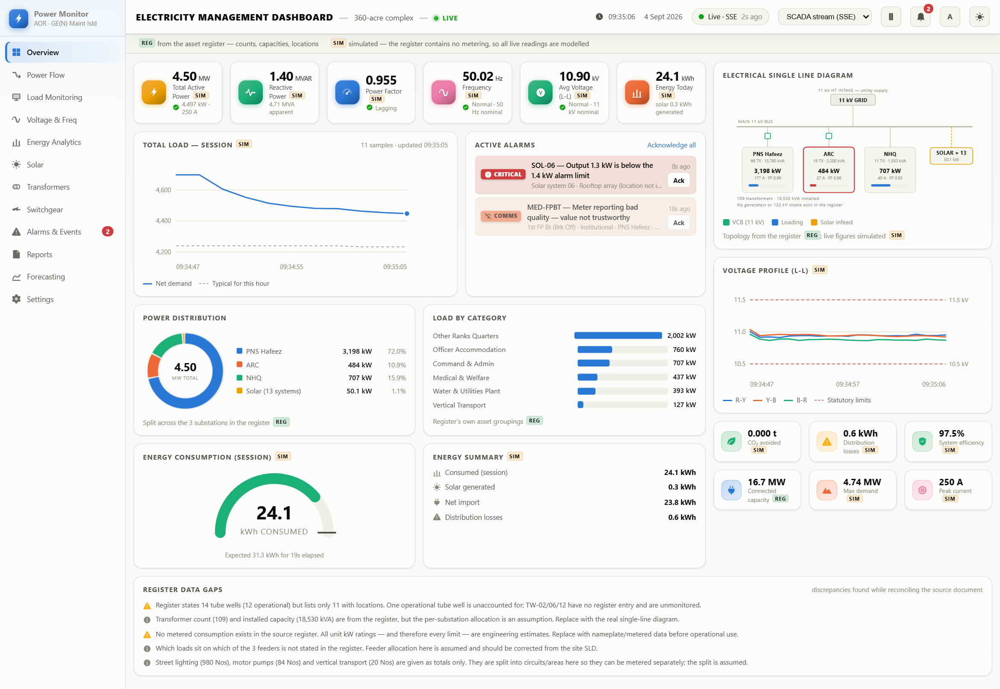

Sabse pehle ye samajhna zaroori hai ke ye cheez hai kya, aur kis masle
ka hal hai.
1.1 Aasan lafzon me
Power Monitor aik website jaisa system hai jo batata hai ke poore complex me bijli
kahan aur kitni kharch ho rahi hai. Ye complex 360 acre ka hai, is me 2,157 buildings
hain, 3 bijli ke substation hain aur 109 transformers hain.
Dashboard par 110 jagahen monitor hoti hain. Har jagah ka apna code hota
hai — jaise TW-01 (Tube Well No.1) ya
MED-HOSP (PNS Hafeez Hospital). Har jagah ki aik limit
set hai. Jab koi jagah apni limit se zyada bijli kharch kare, to dashboard turant
alarm deta hai, aur wo alarm tab tak screen par rehta hai jab tak koi banda
usay dekh kar "Ack" (acknowledge) na kar de.
1.2 Ye kis masle ko hal karta hai
Aise bare complex me pehle sirf ye pata hota hai ke kya kya cheezen maujood hain
— 980 street lights, 84 motor pumps, 14 tube wells. Lekin teen sawalon ka jawab nahi milta:
Bijli ja kahan rahi hai? Kaun se zone aur kaun si building sabse zyada le rahi hai.
Abhi koi kharabi to nahi? Agar koi pump normal se double bijli le raha hai to uska bearing kharab ho raha hai — aur ye kisi ko pata nahi chalta jab tak wo jam na ho jaye.
Nayi building lagane ki gunjaish hai? Kya substation me itni capacity bachi hai.
Dashboard ye teenon sawalon ka jawab har waqt deta rehta hai.
1.3 Sabse zaroori baat — REG aur SIM
Ye parhe bagair koi number istemal na karein
Jo document is project ki bunyaad hai (AOR - GE (N) Maint Isld.docx),
wo aik asset register hai — yaani us me sirf ye likha hai ke kya kya
maujood hai aur kitni tadaad me. Us me bijli ki koi reading nahi hai.
Hum ne document me search kiya: voltage, frequency, power factor,
kWh, meter, generator — in me se aik lafz bhi document me
nahi hai. Sifar (zero) natija.
Isliye dashboard par jo live numbers chal rahe hain wo asli meter se nahi
aa rahe — wo banaye gaye (simulated) hain. Lekin structure asli hai.
Badge
Matlab
Is me kya kya aata hai
REG
Register se aaya
2,157 buildings, 980 lights, 84 pumps, 109 transformers (18,530 kVA), 3 substation, 8 breaker, 475 DB, tube wells ke naam aur jagah. Ye sab asli hai.
SIM
Banaya hua
Har live reading — kW, voltage, current, frequency, power factor, energy, breaker ki halat. Ye asli measurement nahi hai.
Table 1.1 — Dashboard par har number ke saath chhota sa badge lagta
hai jo batata hai ke wo kahan se aaya.
Aik line me kaise batayein
"Structure bilkul asli hai aur hamare register se milta hai. Live numbers abhi model
(simulation) ke hain, aur wo saaf saaf mark kiye gaye hain. Jab asli meter lag jayenge to
sirf data badlega, dashboard wesa ka wesa chalta rahega."
1.4 Kaun log istemal karenge
Kaun
Unhe kya chahiye
Control room operator
Har waqt dekhta rahe ke koi kharabi to nahi. Overview aur Alarms tab.
Voltage, phase imbalance, substation ka load. Voltage & Freq, Power Flow tab.
Facilities manager
Kitni bijli kharch hui, kahan sabse zyada, kharcha kam kaise ho. Energy aur Reports tab.
Planner
Nayi building ke liye capacity hai ya nahi. Forecasting tab.
Bab 2
Bijli ke Basic Alfaz
Ye words dashboard par baar baar aate hain. Pehle aasan matlab, phir
thoda technical.
2.1 Power aur Energy — sabse zyada confusion yahan hoti hai
Aik misaal se samjhein
Power (kW) gaari ke speedometer jaisa hai — abhi is waqt
kitni tez bijli istemal ho rahi hai.
Energy (kWh) gaari ke meter (odometer) jaisa hai — ab tak
kitni bijli total istemal ho chuki hai. Bill isi ka aata hai.
Energy = Power × Time
Misaal: aik pump 10 kW ka hai aur 5 ghante chala.
Energy = 10 kW × 5 ghante = 50 kWh
2.2 Zaroori units
Unit
Poora naam
Aasan matlab
kW
Kilowatt
Abhi kitni tez bijli chal rahi hai. Aik kettle taqreeban 2 kW ka hota hai.
MW
Megawatt
1 MW = 1,000 kW. Poore site ka total isi me likha jata hai (taqreeban 4.5 MW).
kWh
Kilowatt-hour
Kitni bijli kharch hui. Bill isi par aata hai. 1 kW aik ghanta chale to 1 kWh.
MWh
Megawatt-hour
1,000 kWh. Dashboard khud switch kar leta hai jab 1,000 se zyada ho jaye.
kVA
Kilovolt-ampere
Tar aur transformer par total kitna bojh hai. Transformer ki rating isi me hoti hai.
kVAr / MVAR
Reactive power
Wo bijli jo kaam to nahi karti lekin motor aur transformer ko chahiye hoti hai.
V / kV
Volt / Kilovolt
Bijli ka "pressure". Hamare site par 11 kV (11,000 volt) aati hai.
A
Ampere
Kitni bijli beh rahi hai. Tar ki motai isi hisaab se hoti hai.
Hz
Hertz
Bijli aik second me kitni baar rukh badalti hai. 50 ke qareeb rehna zaroori hai.
%
Percent
Loading, efficiency, limit ka kitna hissa — sab me.
t
Ton
CO₂ (carbon) jo solar ki wajah se bacha.
2.3 Bijli ke system ke hissay
Lafz
Matlab
Substation
Wo jagah jahan high voltage aati hai aur usay kam kar ke aage bheja jata hai. Hamare paas 3 hain: PNS Hafeez, ARC, NHQ.
Transformer
Wo machine jo voltage ko high se low karti hai. Register me 109 hain, total 18,530 kVA.
Feeder
Wo tar/circuit jo substation se bijli aage buildings tak le kar jata hai. Register me 3 hain.
Busbar (Bus)
Substation ke andar mota tanba/patti jahan sab connections milte hain.
VCB (Vacuum Circuit Breaker)
Automatic switch jo kharabi hone par circuit kaat deta hai. 11 kV par 8 lage hain.
DB (Distribution Board)
Building ke andar wala board jis me fuse/breaker hote hain. Register me 475 hain.
SLD (Single Line Diagram)
Bijli ke poore system ka standard naqsha. Har electrical engineer isay parh leta hai.
HT / LT
High Tension (11 kV, mota system) aur Low Tension (400 V, building tak).
Solar PV / kWp
Solar panel jo suraj se bijli banate hain. Register me 13 system hain.
2.4 Quality ke alfaz
Lafz
Matlab aur kyun ahem hai
Power Factor (PF)
0 se 1 tak ka score. Batata hai ke jitni bijli aayi us ka kitna hissa asal kaam me laga. 0.95 se upar acha, 0.90 se neeche jurmana lagta hai. Motor zyada chalein to ye neeche aata hai.
Frequency
50 Hz ke qareeb rehna chahiye (49.5 se 50.5 tak). Ye poore mulk ke grid ki halat batata hai — hum apne site se isay control nahi kar sakte.
Voltage
11 kV nominal, 10.5 se 11.5 kV tak theek hai. Kam ho to motor garam hote hain, zyada ho to insulation kharab hoti hai.
Phase Imbalance
Teen phase (R, Y, B) par bojh barabar na ho. 2% se kam rehna chahiye. Zyada ho to motor jal jate hain — ye sabse mehnga nuqsan hai.
Losses
Wo bijli jo tar aur transformer me garmi ban kar zaya ho jati hai. Aam tor par 2–3%. Paise us ke bhi dene parte hain.
Load Factor
Average bijli ÷ sabse zyada (peak) bijli. Zyada ho to istemal barabar hai; kam ho to sirf thori der ke peak ke liye zyada paise de rahe hain.
Peak Demand
Poore arse me sabse zyada bijli jo aik waqt me li gayi. Bijli wale is par alag charge lagate hain.
Capacity
System kitna bojh utha sakta hai. Hamari total 16.7 MW hai, jabke aam istemal sirf 4.5 MW.
Bab 3
Har Tab Kya Dikhata Hai
Baayen taraf 12 tab hain. Har aik ka maqsad alag hai.
Tab
Kis sawal ka jawab deta hai
1. Overview
Abhi is waqt koi kharabi to nahi?
2. Power Flow
Bijli kahan se kahan ja rahi hai?
3. Load Monitoring
Har alag jagah kitni bijli le rahi hai?
4. Voltage & Freq
Jo bijli aa rahi hai wo theek hai ya kharab?
5. Energy Analytics
Ab tak kitni bijli kharch hui aur kahan?
6. Solar
Solar panel theek kaam kar rahe hain?
7. Transformers
Hamare paas kitni transformer capacity hai?
8. Switchgear
Breaker aur boards ki kya halat hai?
9. Alarms & Events
Kya kharabi hui aur kya usay handle kiya gaya?
10. Reports
Total figures kya hain, Excel me export ho sakta hai?
11. Forecasting
Agle 24 ghante me bijli ka load kitna hoga?
12. Settings
Har number kahan se aaya?
Table 3.1 — 12 tabs aik nazar me.
3.1 Overview — sabse ahem screen

Tasveer 1 — Overview screen. Ye wo screen hai jo deewar par lagi
TV/monitor par hamesha chalti rehni chahiye.
Is par ye cheezen hain:
Hissa
Kya dikhata hai
6 bare numbers (KPI)
Total Power (MW), Reactive Power (MVAR), Power Factor, Frequency (Hz), Voltage (kV), Energy (kWh). Har aik ke neeche hara tick ya peela warning hota hai.
Total Load chart
Waqt ke saath bijli ka graph. Neeche dotted line "typical" hai — yaani is waqt aam tor par kitni honi chahiye.
Active Alarms
Jo jagahen abhi limit se upar hain. Har aik ke saath "Ack" ka button.
Power Distribution
Gol chart — 3 substation aur solar me se kaun kitna de raha hai.
Load by Category
Kaun si qism ke assets sabse zyada bijli le rahe hain.
Energy gauge
Ab tak kitni energy kharch hui, aur kitni honi chahiye thi.
Energy Summary
Kharch, solar se bani, grid se li, aur losses.
Single Line Diagram
Poore system ka naqsha — grid, bus, 3 substation, solar.
Voltage Profile
Teenon phase ka voltage graph, upar neeche laal limit lines ke saath.
6 chhote tiles
CO₂, losses, efficiency, capacity, max demand, current.
Register Data Gaps
Document me jo kami/ghalti mili, wo saaf saaf likhi hui.
3.2 Baqi tabs — mukhtasar
2. Power Flow
Aik naqsha jis me moti lakeeren dikhati hain ke bijli kis raste kitni ja rahi hai. Jitni
moti lakeer, utni zyada bijli. Char column: source → bus → substation → group.
Neeche har feeder kitna load utha raha hai (percent me).
3. Load Monitoring
Tasveer 2 — Points table. Har jagah ki live reading, typical, limit
aur status.
Sari 110 jagahon ki list. Columns ka matlab:
Column
Matlab
Tag
Us jagah ka code (jaise TW-01).
Location
Naam aur jagah.
Now
Abhi kitni bijli le raha hai (kW).
Typical
Is waqt aam tor par kitni leni chahiye.
vs typical
Normal se kitna kam/zyada (percent).
Limit
Alarm ki hadd.
% of limit
Limit ka kitna hissa istemal ho chuka. Ye sabse kaam ka column hai.
Trend
Chhota sa graph — pichle kuch minute ka.
Status
Normal / Warning / Over limit / Offline.
Updated
Aakhri reading kitni der pehle aayi.
Upar search box hai, group aur substation ka filter hai, aur aik button "Only points needing
attention" — is se sirf wo jagahen dikhti hain jinme masla hai. Kisi bhi row par click
karein to us jagah ki poori tafseel khul jati hai.
4. Voltage & Frequency
Frequency ka graph (49.5–50.5 Hz ki limit ke saath), teen substation ke alag alag
voltage graph, aur aik table jis me har substation ka voltage, imbalance, current aur power
factor hai. Sabse zaroori number: Phase Imbalance — 2% se kam rehna chahiye.
5. Energy Analytics
Kitni energy kharch hui, average kitna load raha, peak kab tha, load factor kitna hai. Aik
gol chart me: grid se li gayi, solar se bani, aur losses. Aik khaas graph
"Load Duration Curve" — ye batata hai ke kitne waqt tak peak ke qareeb
rahe. Neeche top 10 sabse zyada kharch karne wali jagahen.
6. Solar
13 solar system ki performance. Sabse ahem number "Performance Ratio" hai
— yaani jitni bijli abhi ke suraj me banni chahiye thi, us ka kitna percent asal me bani.
Subah kam output normal hai; dopahar me kam output kharabi hai. Sirf ratio se ye farq pata chalta hai.
7. Transformers
Ye akela tab hai jis par kuch bhi banaya hua nahi hai — sab kuch
register se hai. 109 transformer, 18,530 kVA, aur har substation par kitne lage hain.
8. Switchgear
8 breakers (VCB) ki halat: Closed (chal raha hai), Standby (spare), Open (band kiya gaya),
Tripped (kharabi par khud band ho gaya). Neeche 475 distribution boards ka summary.
9. Alarms & Events
Sare active alarm, aur poori history. Har alarm ke teen waqt likhe hote hain:
kab hua, kab dekha gaya, kab theek hua. Ye teen waqt kisi bhi incident ke baad
sabse zaroori sawal ka jawab dete hain.
10. Reports
Session ka summary aur do CSV export buttons (Excel me khul jate hain): aik sari jagahon ka,
aik alarm history ka.
11. Forecasting
Agle 24 ghante ka andaza. Solid line = jo ho chuka, dotted line = jo hone ka andaza hai.
Shaded (halka) hissa confidence range hai — aage jaa kar chaura hota jata hai kyunki door
ka andaza kam pakka hota hai.
Forecast ke baare me sach
Ye asli "trained forecast" nahi hai. Ye sirf har group ke rozana ke pattern ko jorr kar
banaya gaya andaza hai, kyunki purana record maujood hi nahi hai jis se model seekhta.
Jab kuch hafton ka asli data jama ho jaye ga, tab is ko proper model se badla ja sakta hai.
Ye baat dashboard par bhi likhi hui hai.
12. Settings
Poori tafseel ke kaun sa number kahan se aaya. Agar koi banda kisi figure par sawal uthaye
to ye tab kholein.
Bab 4
Alarm System Kaise Kaam Karta Hai
Ye dashboard ka sabse ahem hissa hai, aur is me kaafi soch bichar ki gayi hai.
4.1 Masla kya hota hai
Agar alarm ka system saada bana diya jaye — yaani "jab number limit se upar jaye to
alarm baja do" — to aik hi jagah se sainkron alarm aate hain aur operator alarm dekhna hi
chhor deta hai. Isay alarm flood kehte hain, aur ye control room ka sabse aam
masla hai.
4.2 Is system me kya kya bandobast hai
Cheez
Value
Kya karta hai
On-delay
6 second
Limit 6 second tak lagatar cross ho, tabhi alarm bajta hai. Aik jhatka alarm nahi de sakta.
Hysteresis
4%
Alarm khatam karne ke liye value ko limit se 4% neeche aana parta hai. Warna value limit par baithi rahe to alarm baar baar on-off hota rahega.
Off-delay
12 second
12 second tak theek rahe, tabhi alarm khatam hota hai.
Latching
—
Alarm khud se gayab nahi hota. Jab tak koi banda "Ack" na kare, screen par rehta hai.
Ringback
—
Agar kharabi khud theek ho gayi lekin kisi ne dekha nahi, tab bhi alarm list me rehta hai. Warna aane jane wali kharabi kabhi pakri hi na jaye.
Escalation
—
Agar wahi masla aur bigar jaye to naya alarm nahi banta — wahi purana alarm update ho jata hai.
Re-arm
90 second
Aik alarm khatam hone ke baad wahi jagah 90 second tak dobara wahi alarm nahi de sakti. Aik kharab sensor se darjnon entries nahi banti.
4.3 Teen level ke alarm
Status
Matlab
Normal
Sab theek hai, kuch karne ki zaroorat nahi.
Warning
Warning limit se upar chala gaya. Dekh lena chahiye, jaldi nahi.
Over limit
Asli limit cross ho gayi. Abhi tawajjo chahiye.
Offline
Meter se koi reading nahi aa rahi. Ye bijli ka masla nahi, connection ka masla hai.
Not monitored
Register me hai lekin meter laga hi nahi (jaise TW-02, TW-06, TW-12).
Agar meter se rabta toot jaye to dashboard usay "Offline" dikhata hai,
"0 kW" nahi. Kyunki inka matlab bilkul alag hai: aik ka matlab hai connection
kharab hai, doosre ka matlab hai bijli waqai band hai. Bohot se systems is me ghalti karte hain.
4.4 Har status me rang ke saath icon aur lafz bhi hota hai
Sirf rang par bharosa nahi kiya gaya, kyunki (a) kuch logon ko rang ki pehchan me mushkil hoti
hai, (b) print black-and-white me nikle to rang khatam ho jata hai, aur (c) jaldi me lafz parhna
rang se zyada tez hota hai.
Bab 5
Data Kahan Se Aata Hai
Kaun sa number asli hai, kaun sa andaza, aur kaun sa banaya hua.
Cheez
Halat
Tafseel
Assets ki tadaad
Asli
2,157 buildings, 980 lights, 84 pumps, 14 tube wells, 475 DB, 13 solar — sab register se.
Transformers
Asli
109 unit, 18,530 kVA. Register ke total se bilkul match karta hai.
Jagahon ke naam
Asli
Tube wells, filter plants, water tanks — naam aur jagah register se.
System ka structure
Asli
3 substation, 3 feeder, 8 VCB, 38 km HT, 108 km LT tar.
Har unit ki kW rating
Andaza
Register me nahi hai. Engineering andaza lagaya gaya. Sari limits isi par bani hain.
Kaun sa load kis feeder par
Farz kiya
Register me nahi likha. Site ke asli SLD se theek karna hoga.
Sari live readings
Banai hui
Computer program se generate hoti hain.
Voltage, current, PF, Hz
Banai hui
Power se hisaab laga kar nikali gayi.
Breaker ki halat
Banai hui
Breaker ki tadaad aur jagah asli hai, halat nahi.
Purana record (history)
Kuch nahi
Page refresh karne par sab khatam. Koi database nahi hai.
Saaf baat
Is waqt dashboard par koi bhi live number asli meter se nahi aa raha.
Ye aik mukammal, sahi kaam karne wala monitoring system hai jo abhi banaye gaye data par chal
raha hai. Software taiyar hai — sirf asli meter lagne baqi hain.
5.1 Asli SCADA se kaise joreinge
Asli meters (Modbus)
↓
Gateway / bridge service ← ye banana parega
↓ (JSON data)
/api/stream
↓
Dashboard — koi tabdeeli nahi
Poore dashboard me sirf aik file badalni parti hai
(src/source.js) jis me batana hota hai ke data kahan se lena hai.
Baqi sab screens khud ba khud asli data dikhane lag jayengi.
Do baatein SCADA jorte waqt zaroor yaad rakhein
1. Agar kisi meter se rabta na ho to us ka data bhejein hi nahi —
us ki jagah 0 mat bhejein. Warna "connection kharab" aur "bijli band" ka
farq khatam ho jayega.
2. Waqt (timestamp) wo bhejein jo meter par reading li gayi thi,
na ke jab data pohancha. Warna atka hua meter bhi theek lagta rahega.
Bab 6
Dashboard Kaise Parhein
Rozana ka tareeqa, aur akhir me zaroori baatein.
6.1 Rozana ka 4-step check (10 second)
Overview ke 6 bare numbers dekhein. Agar Power Factor, Frequency aur
Voltage teenon par hara tick hai, to bijli ki quality theek hai.
Active Alarms dekhein. Khali hai to koi jagah limit se upar nahi.
Load ka graph dekhein. Solid line dotted line ke qareeb chal rahi hai?
Upar connection pill dekhein. "Live" likha ho. Agar "Paused" ya "Feed lost"
hai to upar wale teen check bekaar hain — data purana hai.
Ye chaar theek hain to aur kuch dekhne ki zaroorat nahi.
Us jagah ka graph limits ke saath, aur uske purane alarm.
3
Voltage & Freq
Ye dekhne ke liye ke masla load ka hai ya aane wali bijli ka.
4
Power Flow / Switchgear
Masla kis feeder ya breaker par hai.
5
Reports
Record ke liye CSV nikal lein (Excel me khulta hai).
6.3 Ahem baatein jo zehen me rakhni chahiye
Baat
Tafseel
Sari limits andazay par hain
Kisi unit ki asli kW rating register me nahi thi. Jab tak asli nameplate ya meter data na aaye, limits sirf "provisional" hain. Ye sabse zaroori baat hai.
Record save nahi hota
Page refresh karne par sara data aur alarm history khatam. Zaroori ho to pehle CSV export kar lein.
Login nahi hai
Jo bhi link khole, poora access mil jata hai, alarm Ack karne ka bhi. Alarm log me sirf "operator" likha jata hai, naam nahi.
Register me aik ghalti mili
Document kehta hai 14 tube wells, 12 chalu, lekin naam sirf 11 ke likhe hain. Aik chalu tube well ka hisaab nahi milta. Ye facilities team se poochna chahiye.
Generator nahi hain
Register me kisi generator ka zikr nahi, isliye diagram me bhi nahi dikhaya gaya. Sirf 11 kV grid aur solar.
6.4 Aage kya karna hai
Is dashboard ko asli system banane ke liye teen cheezen chahiye:
Asli meters — shuru me sirf 3 substation par lagayein. Isi se
poora Overview, Voltage aur Power Flow asli ho jayega.
Asli kW ratings — taake limits qabil-e-bharosa hon.
Database (historian) — taake record mehfooz rahe aur proper
forecasting ho sake.
Aakhri baat
Software ke lehaz se ye system mukammal aur professional hai. Kami sirf data ki hai —
aur wo software ka masla nahi, meter lagane ka kaam hai. Achi baat ye hai ke dashboard khud
saaf saaf batata hai ke kaun sa number asli hai aur kaun sa nahi.